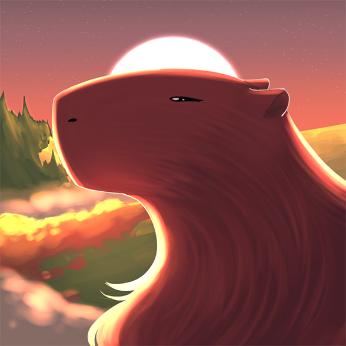
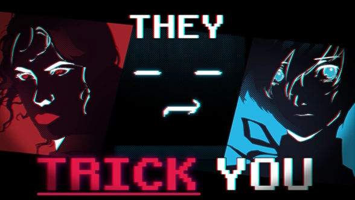
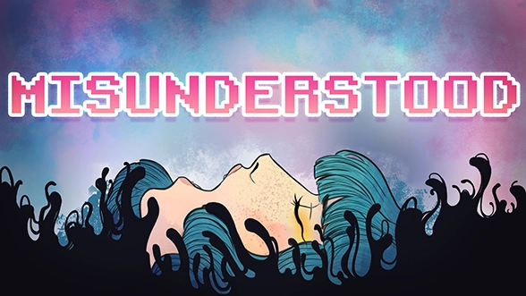
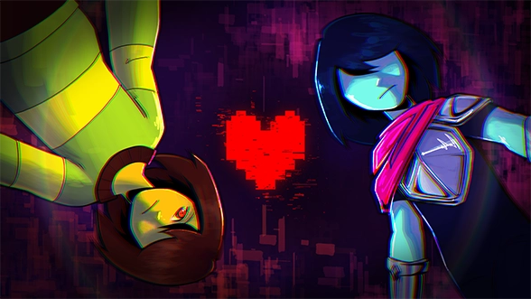

Projects
| Project Name | Photo | Description |
|---|---|---|
| Aventura lui Bebec |  |
A Revolutionary RPG published in mid-2023. Handled programming and writing. |
| Games That Lied About Their Endings |  |
This is the first video that I've ever published on social media, where I showcase the techniques that game developers use to create a fake narrative. |
| Here's What You MISSED About Gris |  |
Here I explain how the game Gris uses it's level design and colors to tell a story about the Grieving Process. |
| DELTARUNE's Greatest Qualities (and Flaws) |  |
Deltarune is among the most well regarded rpg in the last decade or so, with periodic chapter releases to progress the plot. In spite of this title, some have taken issue with some aspects of the game. So I decided to explore and see if it really is that bad. |
| Can You Beat Resident Evil Requiem WITHOUT Getting Hit ? |  |
Resident Evil games are hard. To the point that everything you encounter can and almost certainly kill you. So after hearing all of this, you'd think that only a masochist would attempt trying to beat this without getting hit even once. And you would be entirely correct. |